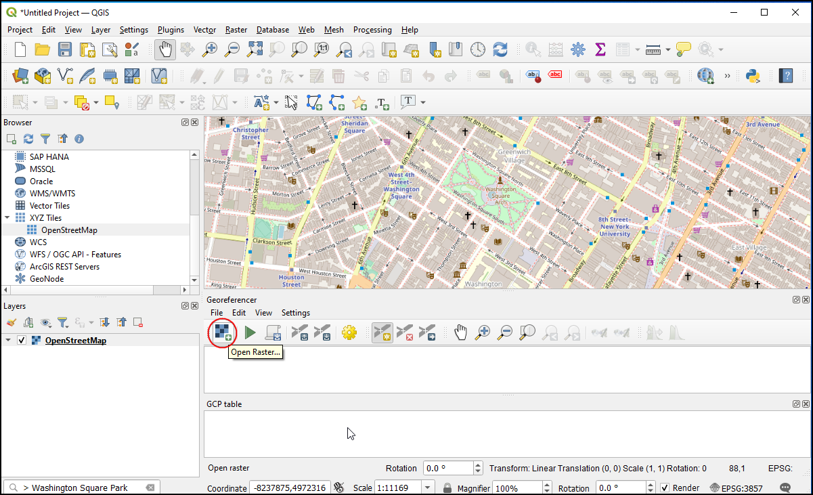

Georeferenciar Imágenes Aéreas (QGIS3)¶
In the tutorial Georeferenciar Hojas Topográficas y Mapas Escaneados (QGIS3), we covered the basic georeferencing process in QGIS. That method involved reading the coordinates from your scanned map and entering them manually as control points. Many times though, you may not have the coordinates printed on your map, or you are trying to georeference an image. In that case, you can use another georeferenced data source as your input. This tutorial will teach you how to use existing open data sources in your georeferencing process.
Vista general de la tarea¶
We will georeference a high resolution balloon-imagery using reference coordinates from OpenStreetMap.
Otras habilidades que aprenderá¶
Using XYZ Tile Layers as a Basemap in QGIS.
Using Built-in Nominatim Geocoder.
Setting a user-defined No-Data value for a layer.
Obtener los datos¶
In this tutorial, we will be using kite and balloon imagery collected by The Public Laboratory. They make the georeferenced versions of the images also available, but we will download a non-georeferenced JPG image and go through the process of georeferencing it in QGIS.
Download the JPG image of Washington Square Park, New York. You can right-click the JPG button and choose Save link as….
Para su comodidad, puede descargar directamente una copia del conjunto de datos del siguiente enlace:
Procedimiento¶
Usaremos un mapa base de OpenStreetMap para capturar las coordenadas para georeferenciación. QGIS3 viene con un soporte incorporado para las capas teselas. Éstas son conocidas comúnmente como capas “XYZ” ya que son hechas usando teselas individuales de mapa para cada nivel de acercamiento (z) en una cuadrícula de coordenada x,y. Puede encontrar la capa
OpenStreetMapbajo Teselas XYZ en el Panel de Explorador. Arrastre la capa a la pantalla principal. Una vez cargada, note el Sistema de Referencia de Coordenadas (SRC) para esta capa en la esquina inferior derecha. Está definido comoEPSG 3857 Pseudo Mercator. Esto es importante porque las coordenadas que inferimos de esta capa durante la georeferenciación estáran en este SRC.

Nota
Vea esta página para más detalles sobre capas XYZ y como agregar otros mapas base en QGIS.
The image we are georeferencing is for
Washington Square Park, New York. You can zoom/pan to locate this park on the map. But that is cumbersome and not practical. From QGIS version 3.20 onwards, there is built-in support for the OpenStreetMap based Nominatim Geocoder. Click the search bar in the bottom left of the QGIS window. To use this as a geocoder prefix, the search place with>. Searching for> Washington Square Parkwill pop up a list of addresses to choose from. Click the first address.

The map canvas will be centered to the Square Park. Now let’s start georeferencing. Launch the Georeferencer from .
Nota
From QGIS versions 3.26 onwards, the Georeferencer can be launched from .

For georeferencing an aerial image, we have to choose coordinate points from the OpenStreetMap, so let’s first dock the Georeferencer tool into to main QGIS window. Select Configure Georeference from .

Check Show georeferencer window docked and click OK.

The Georeferencer window will be docked at the bottom of the main QGIS window. Let us load the image file by clicking the Open Raster icon in the Georeferencer window and navigating to the downloaded JPG file. Click Open.

Before adding Ground Control Points (GCP), we need to define the Transformation Settings. Click on the Transformation Settings icon to open the Transformation Settings dialog. Choose the Transformation type as
Polynomial 2. See QGIS Documentation to learn about different transformation types and their uses. As noted earlier, our base map is inEPSG 3857 Pseudo MercatorCRS, so set that as the Target CRS. You can leave the Output raster name to the default and chooseLZWas the Compression. Check the Use 0 for transparency when needed. Check the Save GCP points to store the points as a separate file for future purposes. Make sure the Load in QGIS when done option is checked. Click OK.

Now click on the Add Point button on the toolbar and select an easily identifiable location on the image. Corners, intersections, poles etc., make good control points. Once you click on the image at a control point location, you will see a pop-up asking you to enter map coordinates. Click the button From map canvas.

In the
OpenStreetMaplayer, click on the exact location in the reference layer. The coordinates will be auto-populated from your click on the map canvas. Click Ok.

Nota
Tip: When selecting a GCP on a building, always choose the bottom of the building. Most aerial and satellite imagery have leaning buildings, so picking a point on the rooftop will introduce errors.
Similarly, choose at least 6 points on the image and add their coordinates from the reference layer. Once you have added the minimum number of points required for the transform, you will notice that the GCPs now have non-zero
dX,dY, andResidualerror values. If a particular GCP has unusually high error values, that usually means a human error in entering the coordinate values. So you can delete that GCP and capture it again.

Once you are satisfied with the GCPs, click Start georeferencing. This will start the process of warping the image using the GCPs and creating the target raster. Once the process is finished, you will see the layer loaded in QGIS. Close the Georeferencer window.

Now click on the Open layer styling panel icon and Switch to the Transparency tab. Add
255as the Additional no data value. This will remove the white border around the image. Now you will see your georeferenced image nicely overlaid on the base layer.

{kind=link}
Nota
La imágenes de 8-bit tienen valores de píxel en el rango 0-255. 0 es negro y 255 es blanco.
If you want to give feedback or share your experience with this tutorial, please comment below. (requires GitHub account)